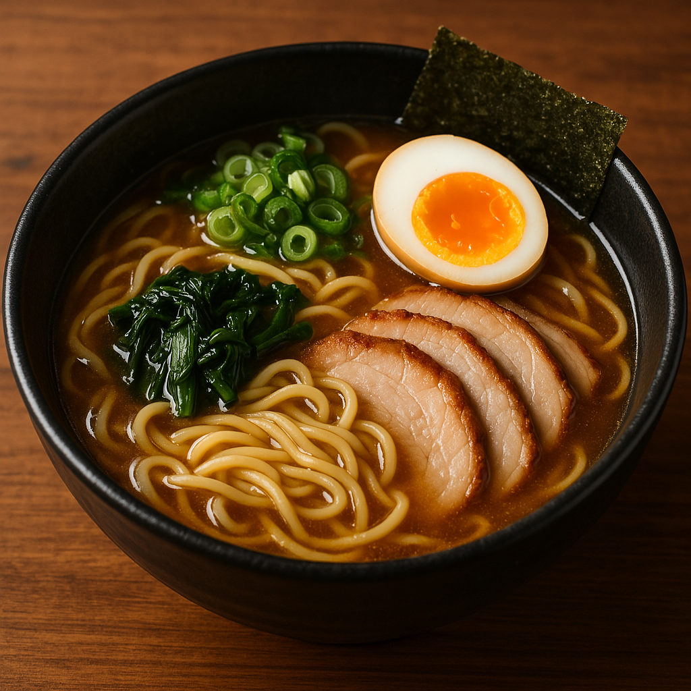
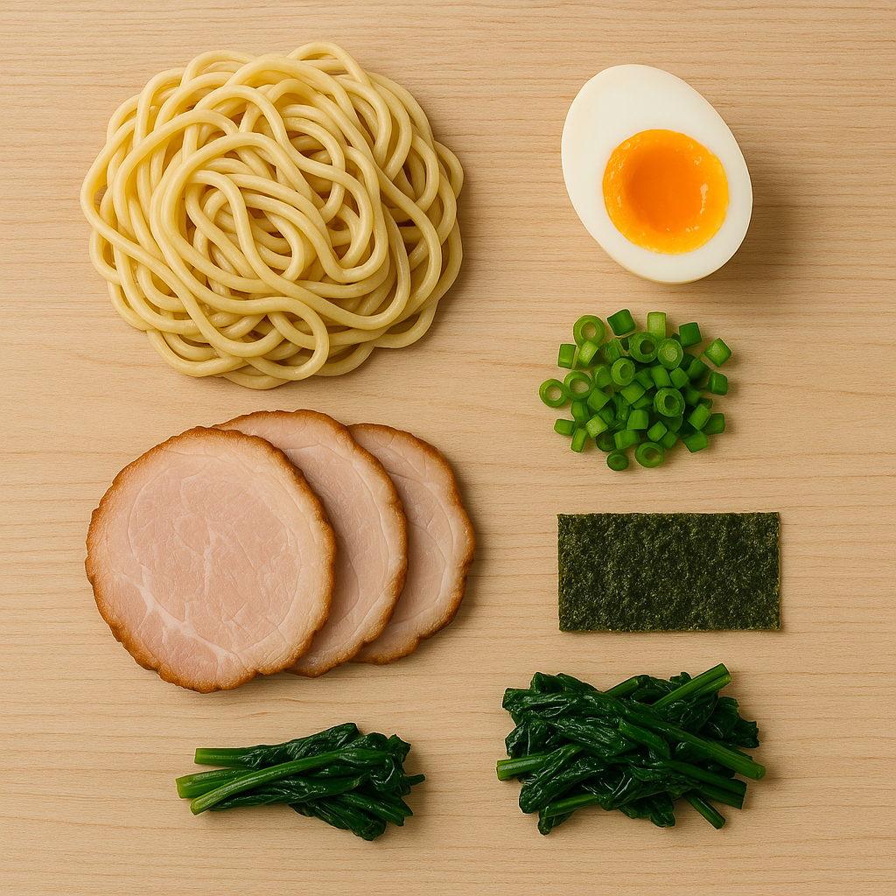
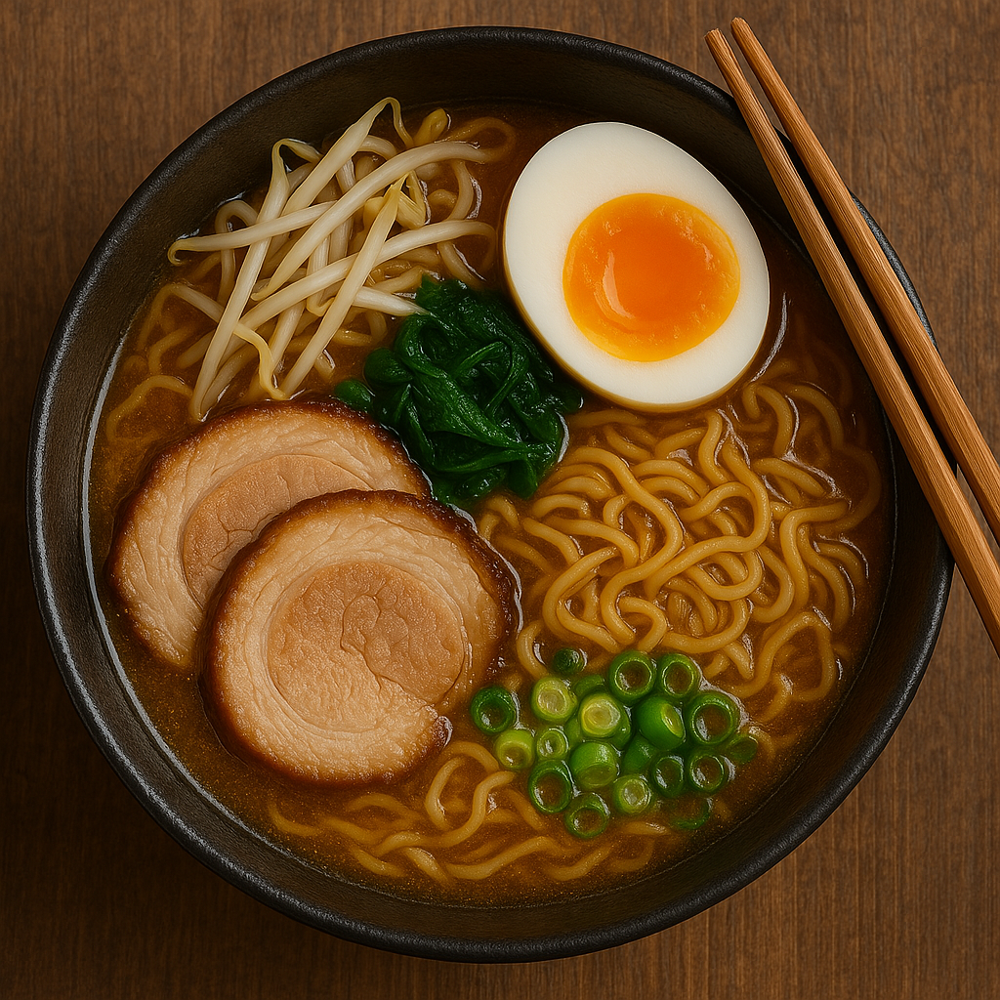

- Ramen -

El Ramen Tradicional es un plato japonés por excelencia, con un caldo intenso y fideos que se cocinan al punto justo. Una combinación perfecta de ingredientes frescos y sabores profundos.
Nuestro ramen se prepara con un caldo que se cocina a fuego lento durante horas, permitiendo que todos los sabores se concentren. Se acompaña con toppings frescos como huevo marinado, algas nori, brotes de bambú y carne tierna.
Ingredientes principales
- Fideos de ramen caseros
- Caldo de cerdo o pollo cocinado a fuego lento
- Huevo marinado y brotes de bambú
- Algas nori y cebolletas
Disfruta de una experiencia única al probar este clásico japonés en nuestro restaurante.


